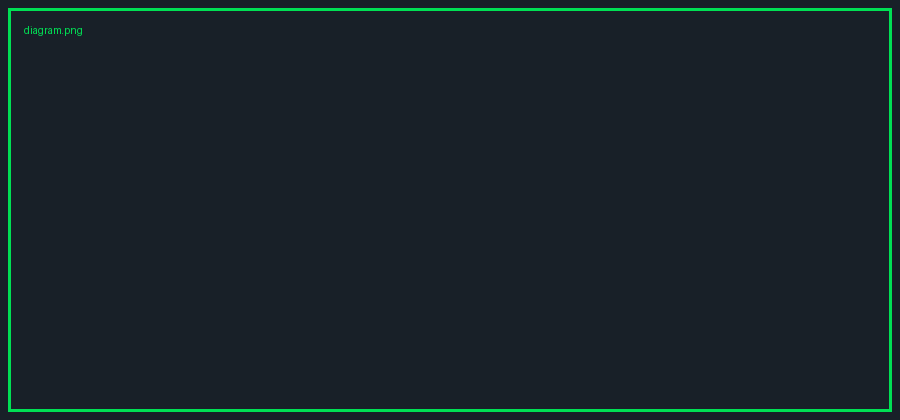

오늘 만들 것
두 시간 뒤,
결과물이 남습니다
- 산출물 1
- 산출물 2
- 산출물 3
핵심 개념 3가지
첫째한 줄 설명이 여기 들어갑니다.
둘째두 번째 카드의 설명입니다.
셋째세 번째 카드의 설명입니다.
묶는 한마디입니다.
STEP 1 · 10분
한 방에 만들기
- 1단계, 핵심 동작을 합니다
- 2단계를 이어서 합니다
- 3단계로 마무리합니다
보충 한 줄입니다.
내보내기 전 확인
- ✓ 첫 번째 확인 항목
- ✓ 두 번째 확인 항목
- 3 숫자 마커도 섞여 있습니다
단계별 사다리
1첫 번째 단입니다
2두 번째 단입니다
능력 네 가지
알림
푸시
수집
저장
묶는 한마디.
붙여넣을 프롬프트
이 코드로 무엇을 하나
const deck = load("index.html");
deck.slides.forEach(s => convert(s));
직접 vs 자동
직접
- 느립니다
- 빠뜨립니다
자동
- 빠릅니다
- 일관됩니다
라벨만 있는 2열
왼쪽 라벨
- 왼쪽 포인트 1
- 왼쪽 포인트 2
오른쪽 라벨
- 오른쪽 포인트 1
- 오른쪽 포인트 2
문제와 해결
| 답이 두루뭉술하다 | 범위와 형식을 지정해서 물어본다 |
| 출처가 없다 | 인용을 눌러 원문을 확인한다 |
한마디
근거 없는 문장은 쓰지 않습니다
연표
2025.04첫 번째 사건
2026.07최근 사건
흐름
지금첫 단계입니다
→
다음두 번째 단계입니다
숫자
100노트북
50소스
요금제
FREE
0원
- 기본 기능
- 하루 3개
PRO
29,000원
- 한도 확대
- 우선 처리
TEAM
문의
- 관리 콘솔
태그
수집
→
정리
→
배포
사례
첫 사례
한국어 가능
무엇을 하는지 한두 문장으로 적습니다.
여기서 배울 점
지시문 공식
역할+과업+산출 형식
역할: 고등학교 과학 교사
과업: 실험 안내서 작성
형식: 표 + 체크리스트
이미지 한 장

이미지 캡션입니다.
배경 위 제목
배경 이미지 위에 얹는 본문입니다.
전면 이미지 위에 얹는 한 줄입니다.
개념 한 장
왼쪽에 글, 오른쪽에 이미지가 비치는 구성입니다.
이어서 보기
SLIDES
강의 슬라이드
오늘 쓴 덱을 그대로 받습니다.
https://example.com/deck

CONTACT
질문 보내기
추가 질문을 남겨주세요.
https://example.com/ask
SOURCES · 1/1
출처
-
[R1]
출처 제목
[원문]
정의되지 않은 컴포넌트
폴백이 동작하면 위 세 줄이 보입니다.[R1]